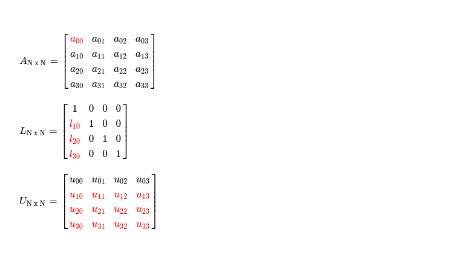
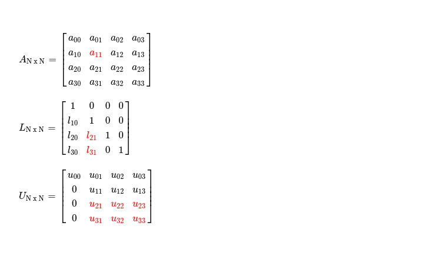
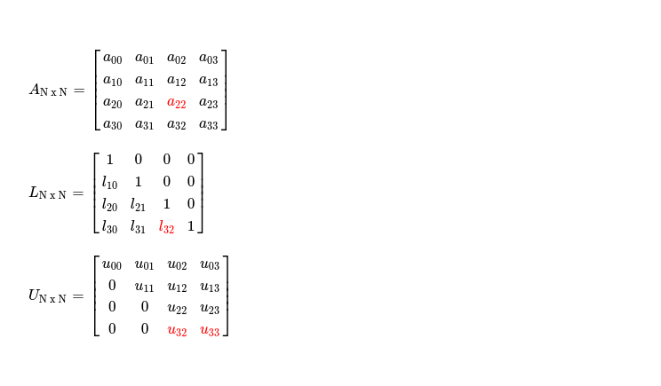
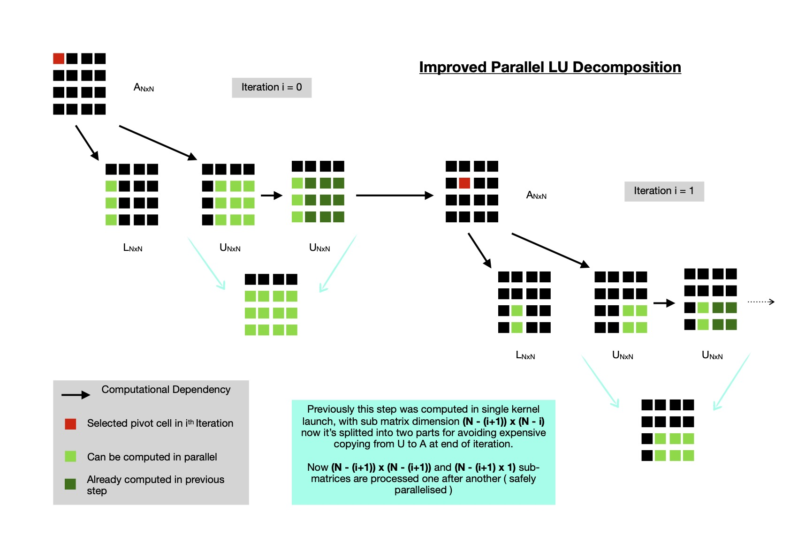

Early this week I was working on Parallel LU factorization implementation for GPGPU, where I discovered obtained performance was not satisfactory. I also noted main reasons behind it can be
Yesterday I planned to take a look at optimizing parallel LU factorization implementation, mainly focusing on aforementioned two points. Now I've an improved
LU factorization implementation which is ~20x faster than previous one. If you're interested in previous implementation, I recommend
taking a look at here.
I'll step by step improve current implementation.
Starting with first point, in each iteration I'm working on a submatrix of size (N - (i + 1)) x (N - i) where i = {0, 1, 2 ... N-2}. LU decomposition selects a pivot ( read Ai, i in ith iteration ) to work on and then reduces all cells below it to zero, while doing so it records multiplication factors in L matrix ( read lower triangular one ) and respectively updates cells in U matrix ( read upper triangular one ). Say in iteration i = 0, I'm working on pivot A0, 0, requiring me to operate on following submatrices.
Similarly in iteration i = 1, when selected pivot is A1, 1, operable submatrix dimension for L reduces to (N - 2) x 1 and for U it becomes (N -2) x (N - 1).
This way it keeps reducing and finally reaches submatrix size of 1 x 2 when N = 4, in iteration i = 2. Point I want to make here, although dimension of operable submatrix keeps reducing, I enqueue all kernel invocation commands with index space of dimension N x N, requiring me to use conditional statements to determine whether certain work-item needs to be active or can be deactivated because its index is out of range. If index of some work item is (r, c) it can be deactivated if !(r > i && c >= i), as it's representing some cell which doesn't need to be processed for selected pivot Ai, i. For these cases where cells don't need to be processed, it results into code paths doing nothing useful --- reducing throughput. When N is large, in each iteration ( read as i keeps increasing ) disabled code path scope keeps increasing, as operable submatrix dimension is (N - (i+1)) x (N - i), lots of work items doing nothing, a huge number of work groups are just launched without doing anything helpful for speeding up computation.

I solve this problem using offsets & non-uniform workgroup sizes. Offsets help me in launching kernels with index space dimension (N - (i + 1)) x (N - i) and work-items pointing to only operable cells --- exactly
what is desired, which stops the need for using conditional statements in kernel. Now no code paths resulting into disabled work-items, all launched work items
doing useful work --- better throughput as GPGPU has enough work to do.
Kernel operating on lower triangular matrix is launched with following index space dimension, where i = current iteration index.
While upper triangular matrix is processed with following index space & offset settings.
Now I'd like to focus on second point, which can help me in improving performance. At end of each iteration, I'm copying N x N many elements
from updated U matrix to A matrix, so that in iteration i+1, I can load from A matrix & compute/ store results in L & U matrices. Note as L matrix
just records multiplication factors, no back and forth copying is required. On other hand, U matrix will eventually become upper triangular matrix, at end of iteration i = (N - 2),
until that point it's used as intermediate storage so that parallel modification by some work-items doesn't affect computation of others, which were expecting
to read unmodified value at some cell (r, c). So at end of each iteration N x N many elements are copied back to A --- which is indeed expensive.
A closer look at which cells are computed/ stored in U reveals only (N - (i + 1)) x (N - i) many of N x N total cells are required
to be copied back to A. In each iteration as i keeps increasing, dimension of copyable submatrix keeps decreasing --- reducing cost. I implement this using
sub-buffers, which are pointing to only required cells of U & A. Now in each iteration ((N - (i + 1)) x (N - i)) many elements are copied from U to A,
where i = {0, 1, 2 ... , N - 2}.
I also notice in each iteration pivot Ai, i is loaded multiple times from global memory, which is high latency, so I introduced work group local memory, which is much faster, for reading Ai, i only once & afterwards all work items in subgroup reading from fast local memory. I select subgroup leader to load Ai, i from global memory and store in designated address in local memory.
This also comes at a cost, requiring me to synchronize all work items in subgroup so that everyone sees same modification performed in acc_lds[0]. I use subgroup barrier to explicitly synchronize all work items in subgroup.
At beginning of LU decomposition, L matrix is prepared by initializing to IN x N. In previous version of LU factorization implementation, I was launching a 2D kernel for covering all indices in N x N index space, where work items with r == c only did something useful, where r, c = indices along Y, X -axis respectively. I see this can be improved by launching a 1D kernel with index space N, where every invocation does useful work by storing 1 in pivot ( read A[i, i], where i ∈ [0, N) ).
At this point, most expensive part is copying (N - (i +1 )) x (N - i) elements from U to A, at end of each iteration. Though with increase of i, submatrix dimension keeps decreasing, it's still not negligible for large N. I found in each iteration, the cells of U matrix which are modified without any computational dependency with others can be encapsulated inside (N - (i + 1)) x (N - (i + 1)) submatrix, while another submatrix of dimension (N - (i + 1)) x 1 can be computed after first one is computed, effectively establishing one dependency. These splitted computation brings benefit that each work-item can be computed in parallel without any data dependency. Effectively in U matrix (N - (i +1 )) x (N - i) cells are being modified in each iteration, just splitted in two ordered steps.
With all these improvements, I'm ready to compare LU factorization's performance for 1024 x 1024 matrix. First I run naive version with work group size 64.
Now running improved LU factorization implementation with same work group size.
~23x speed up gained after fine tuning SYCL DPC++ implementation. I keep optimized version of LU factorization here for future reference.
In coming days, I plan to work on other parallel algorithms targeting accelerators, while also optimizing them by considering small details.
Have a great time !